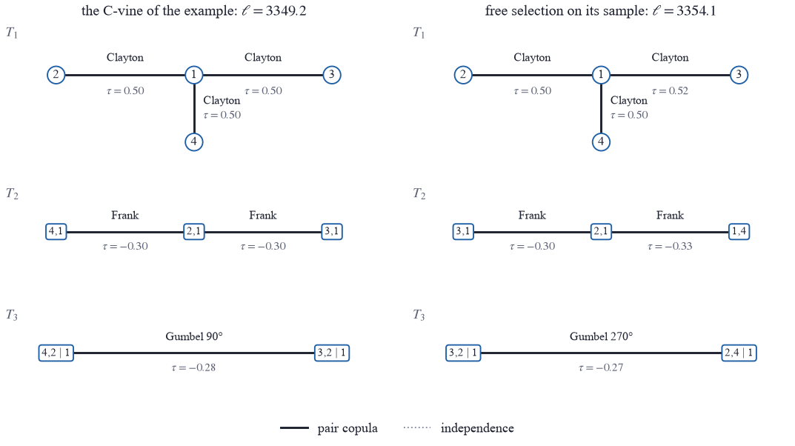
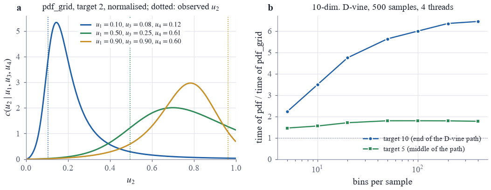
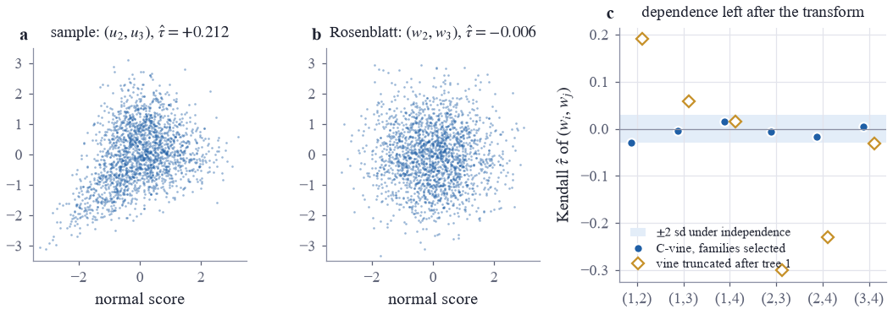
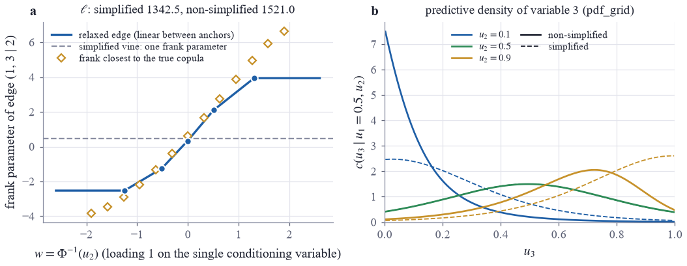

Vine copulas (fv_vinecop)¶
A regular vine (R-vine) copula builds a \(d\)-dimensional copula from \(d(d-1)/2\) bivariate
pair copulas arranged on a nested sequence of trees \(T_1, \dots, T_{d-1}\) (Bedford & Cooke
2002; Aas et al. 2009). Edge \(e\) of tree \(t\) links two variables conditionally on \(t-1\)
others, and its pair copula is applied to conditional distribution functions computed from the
trees below. fv_vinecop stores such a model and provides selection, density, Rosenblatt
transforms and simulation.
Fields¶
| field | type | meaning |
|---|---|---|
d |
integer |
dimension |
trunc |
integer |
number of trees actually stored; edges of trees > trunc are independence |
order(d) |
integer, allocatable |
structure order (variable labels, 1-based) |
st(d, d) |
integer, allocatable |
natural-order structure array, st(edge, tree) |
fam(d, d), rot(d, d) |
integer, allocatable |
family code and rotation of edge (e, t) |
par(3, d, d) |
real(dp), allocatable |
parameters of edge (e, t) in par(:, e, t) |
edge_ll(d, d) |
real(dp), allocatable |
log-likelihood of each edge at selection time |
aux(:, d, d) |
real(dp), allocatable |
nonparametric estimates; first extent NAUX if the family set contained TLL/Bernstein, else 1 |
disc(d) |
logical, allocatable |
discrete variables (original labels), set by select |
threshold |
real(dp) |
threshold used by the last select |
nrel, erel, wa, wk, pk |
non-simplified edges added by relax |
Only edges with t <= trunc and e <= d - t are meaningful.
How the structure is stored¶
The vine is described by two arrays, in the natural-order convention of vinecopulib:
order(1:d)is a permutation of the variable labels.- For tree
tand edgee(1 <= e <= d - t) the edge joins the variablesorder(e)andorder(st(e, t)), conditionally onorder(st(e, 1)), ...,order(st(e, t-1)).
The pair copula of edge (e, t) is evaluated as
\(c\big(u_{\,\text{order}(e) \mid D},\; u_{\,\text{order}(\text{st}(e,t)) \mid D}\big)\): the
variable order(e) is its first argument. For exchangeable families this does not
matter; for asymmetric ones (Tawn, the Khoudraji and asymmetric extreme-value members of the
generic engine) it does, see Rotations and asymmetry.
vc%matrix() converts this into the R-vine matrix of vinecopulib in original labels:
row t of column e holds order(st(e, t)), and the anti-diagonal holds order
(m(d - j + 1, j) = order(j)).
Creating a vine¶
| method | what it does |
|---|---|
init(d) |
allocates every array for dimension d, sets order = [1, ..., d], every edge to independence and trunc = 0 (an empty structure) |
set_dvine(order [, trunc]) |
a D-vine (path) in the given order: tree 1 links order(1)-order(2), order(2)-order(3), ... |
set_cvine(order [, trunc]) |
a C-vine (star in every tree). The root of tree t is order(d - t + 1): the last element of order is the first root |
Both set_* routines call init first, so they discard any families set before. trunc
(default d - 1) limits the number of trees.
C-vine root order
set_cvine([1, 2, 3, 4]) makes variable 4 the root of tree 1, 3 the root of tree 2 and
so on. To make variable 1 the first root, pass the order reversed: set_cvine([4, 3, 2, 1]).
Setting families and parameters by hand¶
After set_dvine / set_cvine (or init plus your own order, st and trunc), assign the
pair copulas directly:
vc = fv.Vinecop().set_dvine([1, 2, 3, 4]) # arrays are indexed [tree, edge] from 0
for e in range(3):
vc.set_pair_copula(0, e, fv.Bicop("gumbel", 0, [2.0])) # tree 1: (1,2), (2,3), (3,4)
for e in range(2):
vc.set_pair_copula(1, e, fv.Bicop("frank", 0, [3.0])) # tree 2: (1,3|2), (2,4|3)
vc.set_pair_copula(2, 0, fv.Bicop("clayton", 90, [1.5])) # tree 3: (1,4|2,3)
Such a model can be evaluated, transformed and simulated straight away. Python also has
set_cvine; R builds D- and C-vine structures (dvine_structure(), cvine_structure()), or
takes the structure of a selected vine (fit$structure). For a nonparametric
edge, allocate vc%aux(NAUX, d, d) yourself (init only allocates a first extent of 1) and
copy the aux vector of a fitted fv_bicop into vc%aux(:, e, t).
Selection¶
u(n, d) are pseudo-observations; every other argument is optional (the controls are
keyword arguments in Python and R). select chooses the
structure (unless it is fixed), then the family, rotation and parameters of every edge.
The Dissmann algorithm¶
With a free structure, selection proceeds tree by tree (Dissmann et al. 2013):
- Candidate edges. In tree 1 every pair of variables is a candidate. In tree \(t \ge 2\) the vertices are the edges of tree \(t-1\), and two of them may be joined only if they share a vertex in tree \(t-1\) (the proximity condition), which guarantees a valid R-vine.
- Edge weights. Each candidate gets the absolute value of the tree criterion
ctl%tree_crit(Kendall's \(\tau\) by default) of its two pseudo-observation columns. - Spanning tree. The tree with the largest total weight is found with Prim's
(default) or Kruskal's algorithm (
ctl%tree_algo). - Pair copulas. For every kept edge the family, rotation and parameters are selected as
in
fv_bicop%select, with all (edge, candidate) fits of the tree running in parallel. - Next tree's data. The h-functions of the fitted pair copulas give the conditional pseudo-observations on which tree \(t+1\) is built.
Selecting the tree by dependence strength first places the strongest dependencies in the low trees, where estimation error propagates least. The tree criteria available are listed in Controls.

Fixed structure¶
Pass fixed = .true. to keep the stored structure and select only the pair copulas. When
fixed is absent it defaults to .true. whenever the object already holds a structure
(trunc > 0), for example after set_dvine, set_cvine or a previous select.
Re-selecting with the same object
Calling vc%select(u, ctl) a second time on an already selected vine keeps the first
structure and its truncation level. To search the structure again, either use a fresh
fv_vinecop, call vc%init(d) first, or pass fixed = .false..
Truncation¶
A truncated vine sets every pair copula above tree \(k\) to independence, which removes \(\binom{d-k}{2}\) edges and can make high-dimensional models much cheaper.
ctl%trunc_lvl = kstops after treek(-1, the default, meansd - 1).ctl%select_trunc = .true.lets the data decide: after each tree, the mBICv of that tree is compared with the mBICv of an all-independence tree \(t\), and selection stops at the first tree that does not improve on it (as vinecopulib'sselect_trunc_lvl).
The level reached is stored in vc%trunc.
Thresholding¶
ctl%threshold = c (default 0) declares every edge whose tree criterion is below c an
independence edge without fitting it; such edges also get the weight of an independent pair
in the spanning-tree step. ctl%select_threshold = .true. chooses c by mBICv: starting from
\(c = 1\) (every edge independent), each pass lowers \(c\) to the \(\lceil 5\% \rceil\)-th largest
criterion among the edges still below it, reselects the vine and accumulates its mBICv over
the trees; the search stops when the mBICv no longer decreases or \(c < 0.01\), and the best
vine is kept (vinecopulib's select_threshold, Nagler et al. 2019). All passes share pair
fits through the fit cache, which is switched on for the search if you
have not enabled it. With weights, the mBICv uses the effective sample size
\((\sum w_i)^2 / \sum w_i^2\). The chosen value is returned in vc%threshold.
Combining select_threshold with select_trunc applies vinecopulib's truncation rule inside
each pass.
Other options¶
weights(n): observation weights for every pair fit and for the weighted tree criteria (tau, rho, joe; the other criteria ignore weights). Python and R:weights.discrete(d),u_minus(n, d): discrete or mixed margins, see Discrete and mixed data.u_minusis required when any variable is discrete. Python and R:var_types("c"or"d"per variable), with the \(F(x^-)\) columns of the discrete variables appended to the data.info: 0 on success. Non-zero values (2, 3, 4) mean that the internal spanning-tree or tree-to-matrix step failed; they are not expected for valid input and indicate a bug.
select removes any non-simplified edges (it calls unrelax).
Density and log-likelihood¶
pdf evaluates the joint copula density at every row of u(n, d); loglik is the sum of
its logarithms. With discrete variables both need u_minus.
pdf_grid is designed for predictive densities: ug(d, bins, n) holds, for each of n
samples, bins points that differ only in variable tgt (1-based label). Edges whose inputs
do not involve tgt are evaluated once per sample rather than once per bin, which saves most
of the work when only one variable varies. The result is out(bins, n). With discrete
variables pass the matching ugm(d, bins, n) of \(F(x^-)\) values.

Rosenblatt transform and simulation¶
The Rosenblatt transform maps a sample of the copula to independent uniforms (Rosenblatt 1952); its inverse maps independent uniforms to a sample of the copula.
The conditioning order follows the structure. The variable order(d) is returned unchanged,
and the others are replaced by conditional distribution functions given variables that come
after them in order; for a D-vine with order \((1, \dots, d)\) the output is
\(w_d = u_d\), \(w_{d-1} = F(u_{d-1} \mid u_d)\), ..., \(w_1 = F(u_1 \mid u_2, \dots, u_d)\).
The columns of w keep the original variable labels.

simulate(n, out, seed, nthreads) draws w with the Fortran intrinsic random_number and
applies inverse_rosenblatt. If seed is given, it reseeds the intrinsic generator
(which changes the generator state of the calling program too); without seed the current
state is used. Python's simulate(n, seed) draws its uniforms with NumPy and R's
rvinecop() with runif() (so set.seed() applies), which gives other samples than
the Fortran generator.
With discrete variables rosenblatt returns Brockwell's randomised transform by default, see
Discrete and mixed data.
Counting parameters¶
npars_eff() sums the parameters of all edges up to trunc, using the effective degrees of
freedom for nonparametric edges and (NK - 1) extra parameter sets per non-simplified edge;
npars() is its rounded value.
Inspecting a vine¶
vc%print([unit]) writes the dimension, truncation level, order and one line per edge
(family name, rotation, parameters) to unit (default 6). Generic family names are cut to 12
characters in this listing; use fv_fam_name(vc%fam(e, t)) for the full name.
vc%matrix() returns the d x d R-vine matrix described above
(Python: vc.matrix; R: as_rvine_matrix(vc)).
Non-simplified edges (relax)¶
Most vine models assume that the pair copulas of trees \(t \ge 2\) do not depend on the values of
their conditioning variables (the simplifying assumption, Haff et al. 2010; Spanhel & Kurz
2019). relax lifts that assumption edge by edge, in the spirit of local likelihood
estimation of conditional copulas (Acar, Craiu & Yao 2011):
For every parametric edge of tree \(t \ge 2\) whose conditioned pair contains variable tgt
(tgt = 0: any edge) and whose conditioning set \(D\) does not:
- \(w\) is the first principal component of the normal scores \(\Phi^{-1}(u_j)\), \(j \in D\)
(loadings stored in
wa). - The edge's family is fitted with Gaussian kernel weights in the rank of \(w\) (bandwidth
0.15 in rank units) at five anchors, the 10, 30, 50, 70 and 90 % quantiles of \(w\)
(values in
wk, parameters inpk). Between anchors the parameters are interpolated linearly in \(w\), beyond them held constant. mode = 2relaxes every eligible edge.mode = 1relaxes only those for which a test of constant conditional correlation rejects at the 5 % level: the Fisher-\(z\) heterogeneity of the normal-score correlation across the quartiles of \(w\), with a null distribution from 99 circular shifts of \(w\) (which preserves serial dependence; after Kurz & Spanhel 2022).- An independence edge that is relaxed becomes Gaussian. Edges of later trees are refitted (same families) on the conditional data that the relaxed edges now produce.
nrel_out returns the number of relaxed edges. relax does nothing if trunc < 2 or any
variable is discrete. vc%rel_params(uc) returns the per-sample parameters
prel(3, nrel, n) of the relaxed edges for samples uc(d, n).

Which methods honour relaxed edges:
| method | uses the \(w\)-dependent parameters |
|---|---|
pdf, loglik, pdf_grid |
yes |
rosenblatt, inverse_rosenblatt, simulate |
no: they use par, which relax sets to the parameters at the middle anchor |
npars, npars_eff, print |
yes (counted / listed) |
unrelax does not restore the original fit
vc%unrelax() only deletes the relaxed-edge records. The parameters relax wrote (the
middle-anchor values of relaxed edges, Gaussian instead of independence, refitted later
trees) stay in fam and par. Keep a copy of the vine (saved = vc) if you want to go
back to the simplified model.
pdf_grid after relax
pdf_grid takes the conditioning values of the relaxed edges from the first bin of each
sample. That is exact when tgt of pdf_grid was also the tgt passed to relax (then
no relaxed edge conditions on it); with relax(..., tgt = 0, ...) it is an approximation.
Example¶
program vine_demo
use fortvine_api
implicit none
integer, parameter :: dp = kind(1.0d0), n = 2000, d = 4
type(fv_vinecop) :: cv, fitd, free
type(fv_controls) :: ctl
real(dp) :: u(n, d), r(n, d), back(n, d), ug(d, 3, 2), dens(3, 2)
integer :: m(d, d), i, k
! a C-vine written by hand; set_cvine roots tree t at order(d - t + 1)
call cv%set_cvine([4, 3, 2, 1]) ! roots: variable 1, then 2, then 3
cv%fam(1:3, 1) = FV_CLAYTON; cv%par(1, 1:3, 1) = 2.0_dp
cv%fam(1:2, 2) = FV_FRANK; cv%par(1, 1:2, 2) = -3.0_dp
cv%fam(1, 3) = FV_GUMBEL; cv%rot(1, 3) = 90; cv%par(1, 1, 3) = 1.4_dp
m = cv%matrix()
print '(a)', 'R-vine matrix (original labels):'
do i = 1, d
print '(4i3)', m(i, :)
end do
call cv%simulate(n, u, seed=11)
! Rosenblatt transform and its inverse
call cv%rosenblatt(u, r); call cv%inverse_rosenblatt(r, back)
print '(a,es9.2)', 'max round-trip error:', maxval(abs(back - u))
! keep the C-vine structure, let select choose families and parameters
ctl%nthreads = 4
call fitd%set_cvine([4, 3, 2, 1])
call fitd%select(u, ctl) ! fixed = .true. by default here
do k = 1, d - 1
print '(a,i0,a,*(1x,a))', 'tree ', k, ':', (trim(fv_fam_name(fitd%fam(i, k))), i = 1, d - k)
end do
! a free structure search, truncated after the first tree
ctl%trunc_lvl = 1
call free%select(u, ctl)
print '(a,i0,a,f10.2,a,f10.2,a)', 'trunc = ', free%trunc, ' loglik', free%loglik(u), &
' (full C-vine:', fitd%loglik(u), ')'
! conditional density of variable 2 on a 3-point grid, other variables fixed per sample
ug(:, :, 1) = 0.3_dp; ug(:, :, 2) = 0.7_dp
ug(2, :, 1) = [0.1_dp, 0.5_dp, 0.9_dp]; ug(2, :, 2) = [0.1_dp, 0.5_dp, 0.9_dp]
call fitd%pdf_grid(ug, 2, dens)
print '(a,3f9.4)', 'pdf_grid sample 1:', dens(:, 1)
print '(a,3f9.4)', 'pdf_grid sample 2:', dens(:, 2)
end program vine_demo
import numpy as np
import fortvine as fv
n, d = 2000, 4
# a C-vine written by hand; set_cvine roots tree t at order[d - t]
cv = fv.Vinecop().set_cvine([4, 3, 2, 1]) # roots: variable 1, then 2, then 3
for e in range(3):
cv.set_pair_copula(0, e, fv.Bicop("clayton", 0, [2.0]))
for e in range(2):
cv.set_pair_copula(1, e, fv.Bicop("frank", 0, [-3.0]))
cv.set_pair_copula(2, 0, fv.Bicop("gumbel", 90, [1.4]))
print("R-vine matrix (original labels):")
print(cv.matrix)
u = cv.simulate(n, seed=11)
# Rosenblatt transform and its inverse
r = cv.rosenblatt(u)
back = cv.inverse_rosenblatt(r)
print(f"max round-trip error:{np.max(np.abs(back - u)):9.2E}")
# keep the C-vine structure, let select choose families and parameters
fitd = fv.Vinecop().set_cvine([4, 3, 2, 1])
fitd.select(u, num_threads=4) # fixed=True by default here
for t, fams in enumerate(fitd.families):
print(f"tree {t + 1}: " + " ".join(fams))
# a free structure search, truncated after the first tree
free = fv.Vinecop.from_data(u, trunc_lvl=1, num_threads=4)
print(f"trunc = {free.trunc} loglik{free.loglik(u):10.2f} (full C-vine:{fitd.loglik(u):10.2f})")
# conditional density of variable 2 on a 3-point grid, other variables fixed per sample
ug = np.empty((2, 3, d)) # (samples, bins, d)
ug[0], ug[1] = 0.3, 0.7
ug[:, :, 1] = [0.1, 0.5, 0.9]
dens = fitd.pdf_grid(ug, target=2)
for s in range(2):
print(f"pdf_grid sample {s + 1}:" + "".join(f"{x:9.4f}" for x in dens[s]))
library(fortvine)
n <- 2000; d <- 4
# a C-vine written by hand; cvine_structure roots tree t at order[d - t + 1]
pcs <- list(rep(list(bicop_dist("clayton", 0, 2)), 3),
rep(list(bicop_dist("frank", 0, -3)), 2),
list(bicop_dist("gumbel", 90, 1.4)))
cv <- vinecop_dist(pcs, cvine_structure(c(4, 3, 2, 1))) # roots: variable 1, then 2, then 3
cat("R-vine matrix (original labels):\n")
print(as_rvine_matrix(cv))
set.seed(11)
u <- rvinecop(n, cv)
# Rosenblatt transform and its inverse
r <- rosenblatt(u, cv)
back <- inverse_rosenblatt(r, cv)
cat(sprintf("max round-trip error:%9.2E\n", max(abs(back - u))))
# keep the C-vine structure, let vinecop choose families and parameters
fitd <- vinecop(u, structure = cvine_structure(c(4, 3, 2, 1)), cores = 4)
for (t in 1:(d - 1))
cat("tree ", t, ": ", paste(vapply(fitd$pair_copulas[[t]], function(b) b$family, ""),
collapse = " "), "\n", sep = "")
# a free structure search, truncated after the first tree
free <- vinecop(u, trunc_lvl = 1, cores = 4)
cat(sprintf("trunc = %d loglik%10.2f (full C-vine:%10.2f)\n", free$trunc,
sum(log(dvinecop(u, free))), sum(log(dvinecop(u, fitd)))))
# conditional density of variable 2 on a 3-point grid, other variables fixed per sample
dens <- dvinecop_grid(matrix(c(0.3, 0.7), 2, d), fitd, tgt = 2, grid = c(0.1, 0.5, 0.9))
for (s in 1:2) cat("pdf_grid sample ", s, ":", sprintf("%9.4f", dens[s, ]), "\n", sep = "")
Output:
R-vine matrix (original labels):
[[1 1 1 1]
[2 2 2 0]
[3 3 0 0]
[4 0 0 0]]
max round-trip error: 4.24E-14
tree 1: clayton clayton clayton
tree 2: frank frank
tree 3: gumbel
trunc = 1 loglik 2658.64 (full C-vine: 3354.12)
pdf_grid sample 1: 0.4293 9.0746 1.4403
pdf_grid sample 2: 0.0825 3.6496 1.8278
R-vine matrix (original labels):
[,1] [,2] [,3] [,4]
[1,] 1 1 1 1
[2,] 2 2 2 0
[3,] 3 3 0 0
[4,] 4 0 0 0
max round-trip error: 2.03E-13
tree 1: clayton clayton clayton
tree 2: frank frank
tree 3: gumbel
trunc = 1 loglik 2469.68 (full C-vine: 3202.69)
pdf_grid sample 1: 0.3102 8.1820 1.2356
pdf_grid sample 2: 0.0740 3.5746 1.5104
Each language draws its own uniforms, so the samples and everything fitted to them differ; the matrix does not depend on the sample.
Reading the matrix column by column: column 1 has 4 on the anti-diagonal and 1 above it,
so the tree-1 edge is (4, 1); column 2 gives (3, 1) in tree 1 and (3, 2 | 1) in tree 2, and so
on. Variable 1 is the root of tree 1 and variable 2 the root of tree 2, as intended.